Contents
EE362 HW#1
NAME: SOLUTION
STUDENT NUMBER: 123456
Q.1)
% PART A
a) Pole number is 2 (see figure).
pole = 2;
b) There are a total of 30 slots in one layer.
slot_number = 30;
c) Electrical angle of one slot is: 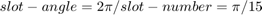
slot_angle = 2*pi/slot_number;
d) Phase belt angle is the electrical angle for one pole of one phase 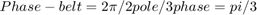
phase = 3; phase_belt = 2*pi/(pole*phase);
e) Number of slots per phase per pole is: 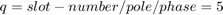
q = slot_number/(phase*pole);
f) Coil span is the angle spanning one coil: 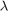 = 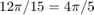
coil_span = pi*4/5;
g) Total number of series turns per phase: 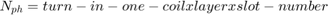
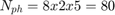
conductor = 8; layer = 2; Nph = q*conductor*layer*(pole/2);
h) Distribution factor: 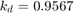
kd = sin(q*slot_angle/2)/(q*sin(slot_angle/2));
i) Pitch factor: 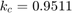
kc = sin(coil_span/2);
j) Winding factor: 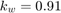
kw = kd*kc;
k) Mechanical speed of the air gap MMF: Nr = 3000 rpm
frequency = 50; Nr = 120*frequency/pole;
PART B
Parts a, b, c, d)
peak_current = 2; % Amps parts = 4; % Define MMF components mmfa = zeros(parts,slot_number); mmfb = zeros(parts,slot_number); mmfc = zeros(parts,slot_number); mmftotal = zeros(parts,slot_number); % Time array is the time instants at which MMF will be calculated time_array = [0,6.67e-3,10e-3,13.33e-3]; for l = 1:parts % Define the time according the index l time = time_array(l); % Calculate the phase currents at that time instant Ia = peak_current*cos(2*pi*frequency*time); Ib = peak_current*cos(2*pi*50*time-2*pi/3); Ic = peak_current*cos(2*pi*50*time-4*pi/3); MMFa_layer1 = conductor*[Ia,Ia,Ia,Ia,Ia,0,0,0,0,0,0,0,0,0,0,-Ia,-Ia,... -Ia,-Ia,-Ia,0,0,0,0,0,0,0,0,0,0]; MMFa_layer2 = conductor*[Ia,Ia,0,0,0,0,0,0,0,0,0,0,-Ia,-Ia,-Ia,-Ia,... -Ia,0,0,0,0,0,0,0,0,0,0,Ia,Ia,Ia]; MMFb_layer1 = conductor*[0,0,0,0,0,0,0,0,0,0,Ib,Ib,Ib,Ib,Ib,0,0,0,0,0,... 0,0,0,0,0,-Ib,-Ib,-Ib,-Ib,-Ib]; MMFb_layer2 = conductor*[0,0,0,0,0,0,0,Ib,Ib,Ib,Ib,Ib,0,0,0,0,0,0,0,0,... 0,0,-Ib,-Ib,-Ib,-Ib,-Ib,0,0,0]; MMFc_layer1 = conductor*[0,0,0,0,0,-Ic,-Ic,-Ic,-Ic,-Ic,0,0,0,0,0,0,0,... 0,0,0,Ic,Ic,Ic,Ic,Ic,0,0,0,0,0]; MMFc_layer2 = conductor*[0,0,-Ic,-Ic,-Ic,-Ic,-Ic,0,0,0,0,0,0,0,0,0,0,... Ic,Ic,Ic,Ic,Ic,0,0,0,0,0,0,0,0]; for k = 1:slot_number mmfa(l,k) = sum(MMFa_layer1(1:k))+sum(MMFa_layer2(1:k)); mmfb(l,k) = sum(MMFb_layer1(1:k))+sum(MMFb_layer2(1:k)); mmfc(l,k) = sum(MMFc_layer1(1:k))+sum(MMFc_layer2(1:k)); end % To get rid of the offset on the MMF waveforms, use the following % routine for each phase MMF average = sum(mmfa(l,:))/slot_number; mmfa(l,:) = mmfa(l,:)-average; average = sum(mmfb(l,:))/slot_number; mmfb(l,:) = mmfb(l,:)-average; average = sum(mmfc(l,:))/slot_number; mmfc(l,:) = mmfc(l,:)-average; mmftotal(l,:) = mmfa(l,:)+mmfb(l,:)+mmfc(l,:); end
Part e)
subplot(4,1,1) stairs(mmfa(1,:),'b- ','Linewidth',1.5) grid on; set(gca,'FontSize',12); ylabel('Phase A MMF','FontSize',8,'FontWeight','Bold'); set(gca,'xtick',[0:2:30]); title('t = 0','FontSize',10,'FontWeight','Bold') subplot(4,1,2) stairs(mmfa(2,:),'b- ','Linewidth',1.5) grid on; set(gca,'FontSize',12); ylabel('Phase A MMF','FontSize',8,'FontWeight','Bold'); set(gca,'xtick',[0:2:30]); title('t = 6.67 msec','FontSize',10,'FontWeight','Bold') subplot(4,1,3) stairs(mmfa(3,:),'b- ','Linewidth',1.5) grid on; set(gca,'FontSize',12); ylabel('Phase A MMF','FontSize',8,'FontWeight','Bold'); set(gca,'xtick',[0:2:30]); title('t = 10 msec','FontSize',10,'FontWeight','Bold') subplot(4,1,4) stairs(mmfa(4,:),'b- ','Linewidth',1.5) grid on; set(gca,'FontSize',12); xlabel('Slot Number','FontSize',8,'FontWeight','Bold'); ylabel('Phase A MMF','FontSize',8,'FontWeight','Bold'); set(gca,'xtick',[0:2:30]); title('t = 13.33 msec','FontSize',10,'FontWeight','Bold')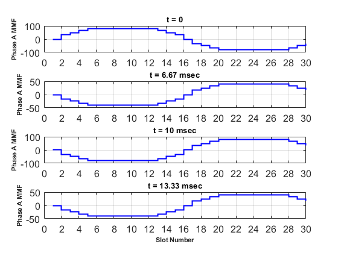
Since the MMF is due to phase-A (1 phase), it is pulsating over time. We can observe that the maximum peak-to-peak is obtained at "t=0" which is the instant where phase-A current is maximum. We can also observe that at "t = 10msec" which is the half period for a 50 Hz voltage, the waveform is completely reversed.
Q.2)
Part a)
Since the rotor rotation dirction and the MMF waveform direction produced by the stator windings are the same, the induced voltage frequency can be calculated by the relative speed (their difference) as following:
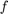 = 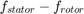
= 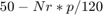
Nr = 1300, p = 4
= 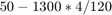
f = 6.66 Hz
Part b)
Using the same procedure in (a):
f = 20 Hz
Part c)
When the rotor direction is reversed, the relative speed will be the sum of two frequencies which can be calcuulated as follows:
= 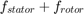
=
Nr = 1300 p = 4
= 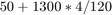
f = 93.4 Hz
Part d)
Using the same procedure in (c):
f = 80 Hz